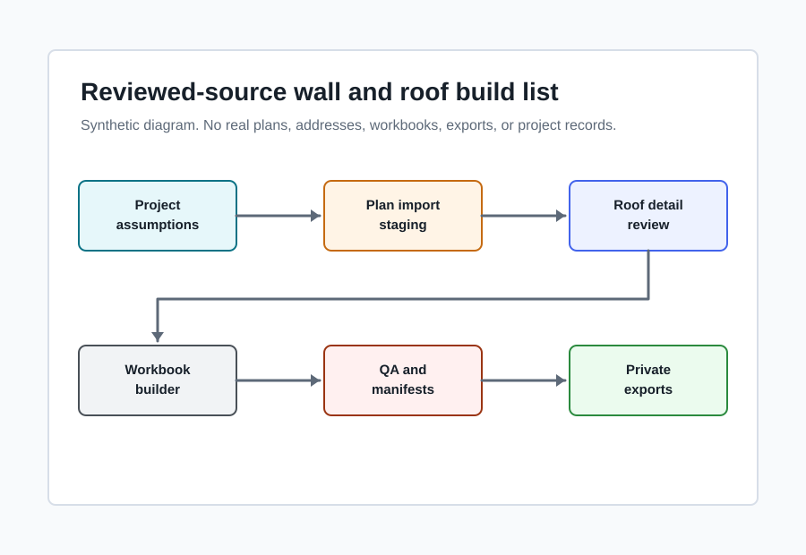
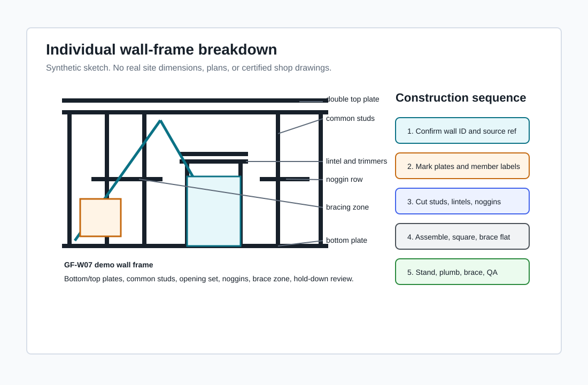

What It Does
Shows how wall and conventional pitched roof measurements can move from reviewed plan imports into workbook calculations, optimizer rows, QA checks, and supplier-ready exports.
A sanitized look at an Excel-based wall and conventional pitched roof framing material workflow with reviewed imports, source manifests, LVL optimization, supplier exports, and QA blockers.

Shows how wall and conventional pitched roof measurements can move from reviewed plan imports into workbook calculations, optimizer rows, QA checks, and supplier-ready exports.
Residential estimators, builders, carpentry teams, and automation engineers working with auditable cut-on-site wall and pitched roof framing material lists.
Unreviewed source rows stay staged and block order readiness. Reviewed rows can flow into calculated quantities and export lines.
Identifies, breaks down, labels, sketches, diagrams, and sequences individual wall frames from cut list through stand and brace checks.
The showcase covers labelled wall IDs, member groups, opening relationships, bracing and hold-down review items, and construction sequence steps for individual wall frames.
